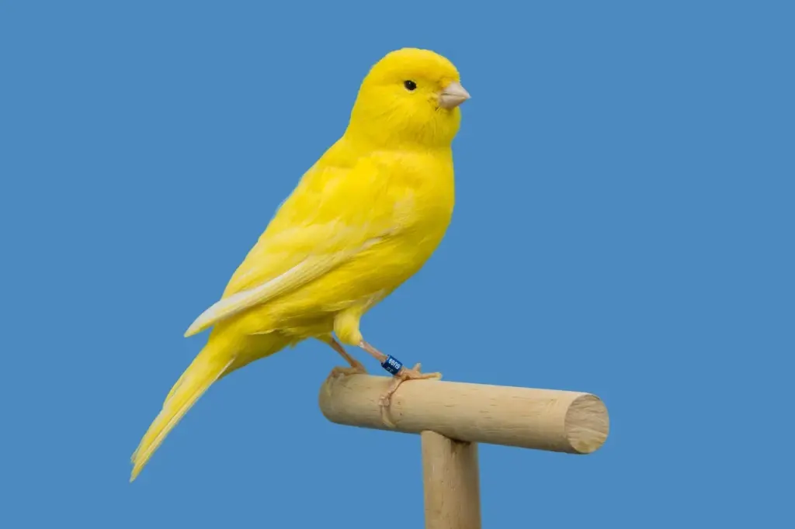
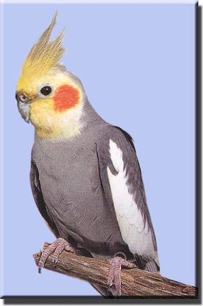
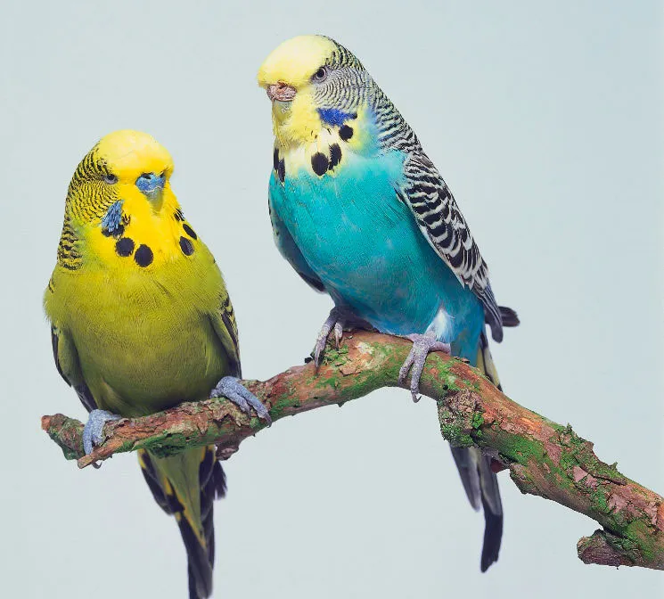
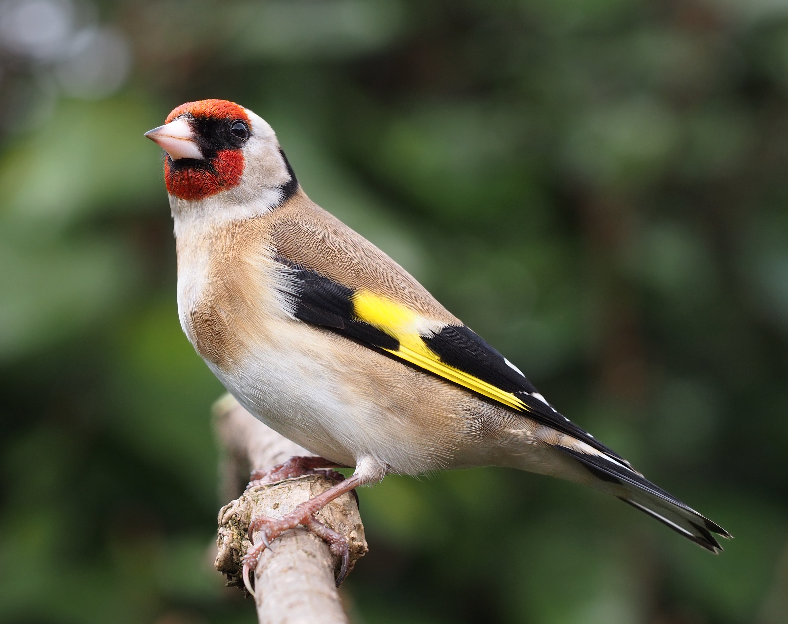

Это страница про попугаев
Попугаеобра́зные — отряд птиц из инфракласса новонёбных. Отряд состоит примерно из 398 видов, принадлежащих к 92 родам. Известны с миоцена. Википедия Продолжительность жизни: Какаду: 40 – 60 лет, Какапо: 60 лет, Гиацинтовый ара: 50 лет. Длина от 9,5 см до 1 м. Оперение — мелкое, довольно редкое. Большинство попугаев очень ярко окрашены, причём преобладающим цветом обыкновенно является яркий травянисто-зелёный. Ярко окрашенные поля резко отграничены одно от другого, и цвета их часто бывают дополняющими цветами спектра (зелёный и пурпуровый, голубовато-фиолетовый и светло-жёлтый и т. п.). Молодые попугаи обычно окрашены одинаково. Самым характерным признаком отряда является клюв. Высота клюва при основании больше чем вдвое превосходит его ширину, а иногда превосходит и длину. Сильно согнутое надклювье, соединённое с черепом подвижно, с острым хребтом и короткой восковицей при основании, похожей на восковицу хищных птиц. Боковые края надклювья обыкновенно с тупыми, сильными зубовидными выступами с той и другой стороны, которым соответствуют две глубокие выемки на краях подклювья. Подклювье коротко усечено и широко. Попугаи могут долбить клювом очень твёрдые плоды, при лазании цепляются клювом за ветви. Ноги довольно короткие, толстые, оперены до пятки. 1-й и 4-й пальцы на лапах повёрнуты назад, так что попугаи не только хорошо охватывают лапами ветки, но могут подносить лапой пищу к клюву. Когти сильно изогнуты, но довольно слабы. Очень короткая плюсна покрыта табличками, расположенными сеткообразно. Крылья большие, заострённые; маховых перьев, с крепкими стержнями и широкими опахалами, обыкновенно 20; хвост двенадцатипёрый. Полёт быстрый, но обычно на небольшое расстояние. Голова у попугаев крупная с большим крючкообразным клювом, подобным клюву пернатых хищников, но более высоким и толстым. Главная особенность клюва попугаев состоит в том, что он служит не только для добывания и измельчения пищи, но и как орган передвижения. Образно говоря, клюв попугая — это его третья нога. Зацепится клювом-крючком за сучок — освободил лапки, подтянул вверх туловище, ухватился подвижными пальцами за очередную ступеньку, потом опять забросил клюв-крючок повыше. Вот такими своеобразными приёмами попугаи передвигаются быстро и в лесу, и в своих жилищах в зоопарке; при этом они могут держать в клюве плод или орех и на ходу закусывать.
ТОП-10 домашних птиц.
- Канарейки
- Кореллы
- Африканские серые попугаи
- Волнистые попугайчики
- Аратинги
- Неразлучники
- Амадины
- Какарики
- Розелла
- Щеглы